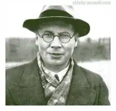

Народився автор 24 квітня в 1903 році. У поета була проста сім'я: батько працював агрономом, а мати — педагогом. Своє дитинство Микола провів в селі, що значно відбилося на його творчості. Вперше любов до поезії Заболоцький відчув в ранньому віці, перші вірші були написані в шість років.
У Уржумському училище юнак цікавився всім, чим тільки можна: історія, мистецтво, хімія і багато іншого. Далі поет надходить в Москву на історико-філологічний і медичний факультет. Трохи пізніше Заболоцький переїжджає в Петроград і там продовжує навчання.
Як тільки поет закінчив навчання, він вирішив йти в армію. Микола поєднував службу з журналістикою діяльністю в місцевій стінгазеті. Саме армія дала той поштовх, який потрібен Заболоцький. Він знайшов себе і свій стиль. Після армії робота поета була відмінною. Він працював у відділі дитячої книги Державного видавництва під керівництвом С. Маршака. Особливе місце в його творчості займали діти. Перша збірка віршів вийшла в 1929 році і мав назву "Стовпці". Саме цей збірник отримав величезний резонанс в суспільстві. Багато його не зрозуміли і не прийняли. Адже у віршах, які представлені в "Шпальтах", чітко видно знущання і сарказм над міщанством. Люди, які були близькі до творчості і літературі, простежили пародії на стилі таких авторів, як Бальмонт, Пастернак, Достоєвський. Наступна збірка публікується в 1937 році і носить назву "Друга книга". Заболоцького звинуватили в змові і пропаганді. В кінці 1930-их років поета заарештували. Його хотіли засудити до розстрілу, повісити організацію змов, однак, зробити цього не вдалося. Заболоцького катували, але він не підписав безпідставне обвинувачення. Все те, що відбувалося з Миколою в цей час, було розкрито в поемі "Історія мого ув'язнення". Сорокові роки стали вирішальними в біографії Заболоцького. Він змінив напрямок у творчості. Відмовився від творів, які сповнені сарказму та іронії. Почав писати більш класичні вірші, які доступні всім. В кінці 1950-их років Микола повернувся в Москву. Він відвоював статус човна Спілки письменників. Свій третій збірник віршів "Вірші" був опублікований в 1948 році. Після Заблоцький майже не писав віршів. У 1955 році у поета стався серцевий напад. Його стан погіршився. Імовірно причиною серцевого нападу могло стати те, що дружина Заболоцького зраджувала йому. Чоловік просто не бачив або відмовлявся бачити те, що творила його улюблена. Особисте життя Заболоцький не афішував, тому про цей факт мало відомо. З новими силами поет взявся за роботу після розвінчання культу Сталіна і відлиги. Цей етап в історії країни знайшов відображення у віршах "Десь у полі поблизу Магадана", "Казбек". У 1957 році був опублікований останній збірник віршів "Остання любов". 14 жовтня 1958 році Заболоцький помер від інфаркту.